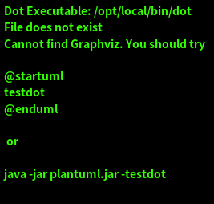

软件
Table of Contents
List of Tables
1. 软件测试
软件测试根据看问题角度不同，有多种分类。
1.1. 根据项目流程阶段划分
几种测试和设计的对应关系见表1所示。
| 设计阶段 | 测试阶段 |
|---|---|
| 市场调研 | 验收测试 |
| 需求分析 | 系统测试 |
| 架构设计 | 集成测试 |
| 模块设计 | 单元测试 |
1.1.1. 单元测试
单元测试，也叫模块测试，是对程序中的单个子程序或具有独立功能的代码段进 行测试的过程。
1.1.2. 集成测试
集成测试是在单元测试基础上，先通过单元模块组装成系统或子系统，再进行测 试。重点是检查模块间的接口是否正确。
1.1.3. 系统测试
系统测试是针对整个产品系统进行的测试，验证系统是否满足需求规格的定义， 以及软件系统的正确性和性能等，是否满足其需求规格的要求。
1.1.4. 验收测试
验收测试是部署软件之前的最后一个测试阶段。目的是确保软件准备就绪，向客 户展示该软件系统能够满足用户的需求。
1.2. 根据模块细节可见程度划分
1.2.1. 白盒测试
白盒测试，按照程序内部的结构测试程序，通过测试来检测产品内部动作是否按 照设计规格说明书的规定正常进行，检验程序中的每条逻辑路径是否都能按照预 定要求正确工作。
1.2.2. 黑盒测试
黑盒测试不关心内部结构和流程。只关心软件的输入和输出关系。
1.2.3. 灰盒测试
灰盒测试，既关注输入输出关系，也关注内部表现。但没有白盒测试关注的那么 详细完整。
1.3. 根据不同测试面划分
1.3.1. 逻辑功能测试
1.3.2. 界面测试
1.3.3. 易用性测试
1.3.4. 安装测试
1.3.5. 兼容性测试
1.3.6. 安全测试
1.3.7. 时间性能测试
注意考核软件的一个具体的响应时间
1.3.8. 空间性能测试
主要指软件运行时消耗的系统资源，如CPU、内存、网络带宽等。
1.4. 根据测试手段划分
1.4.1. 手工测试
1.4.2. 自动化测试
自动化测试需要有几大原则。
- 任务测试明确，不会频繁变动；
- 每日构建后的测试验证；
- 比较频繁的回归测试；
- 软件系统界面稳定，变动少；
- 需要在多个平台上运行的相同测试案例，组合遍历型测试，大量的重复任务；
- 软件维护周期长；
- 项目进度压力不太大；
- 被测软件系统开发较为规范，能够保证系统的可测性；
- 具备大量的自动化测试平台；
- 测试人员具备较强的编程能力；
1.5. 其他划分
1.5.1. 冒烟测试
是指在对一个新版本进行大规模的系统测试前，先验证一下软件的基本功能是否 实，是否具备可测性。测试小组在正式测试一个新版本前，先投入较少的人力和 时验证一个软件的主要功能，如果主要功能都没有运行通过，也没必要进行深入 测试。
1.5.2. 回归测试
是指确认问题是否得到修复，是否引入了新的问题。
1.5.3. 随机测试
指测试中的输入数据都是随机生成，模拟用户的真实操作，发现一些边缘性的错 误。
1.5.4. 探索性测试
探索性测试可以说是一种测试思维技术，它没有很多实际的测试方法，技术和工 具。探索性测试强调测试人员的主观能动性，抛弃繁杂的测试计划和测试用例设 计过程，强调在碰到问题时及时改变测试策略。
2. 编程语言
2.1. c
2.1.1. 宏操作
从注释来看是把x转换成字符串。
/* * Macros to transform values * into environment strings. */ #define XMK_STR(x) #x #define MK_STR(x) XMK_STR(x)
找到了相关的资料，解读了这个define，还顺便认识了另外两个不常用的 define
#define Conn(x,y) x##y #define ToChar(x) #@x #define ToString(x) #x
x##y表示什么？表示x连接y，举例说：
int n = Conn(123,456); //结果就是n=123456; char* str = Conn("asdf", "adf")//结果就是 str = "asdfadf";
再来看#@x，其实就是给x加上单引号，结果返回是一个const char。举例说： char a = ToChar(1);结果就是a='1';做个越界试验char a=ToChar(123);结 果是a='3'; 但是如果你的参数超过四个字符，编译器就给给你报错了！ error C2015: too many characters in constant; 最后看看#x,估计你也明 白了，他是给x加双引号
char* str = ToString(123132);//就成了str="123132";
宏调试接口
#pragma diag_suppress 174 //抑制警告 #ifdef DEBUG #define printfdbg printf #else #define printfdbg / \ /printfdbg #endif
可变参宏函数
//可变参宏函数定义 #define HAL_FUN(FUN_NAME, ...) \ FUN_NAME(__VA_ARGS__); //1参数函数定义 void funTest1(int a) { printf ("a:%d\n", a); } //2参数函数定义 void funTest1(int a, int b) { printf ("sum:%d\n", a+b); } //调用实例 int main(int argc, char* argv[]) { HAL_FUN(funTest1, 2); HAL_FUN(funTest1, 1, 3); return 0; }
2.1.2. 位操作
将最右侧0改为1：
x|(x+1)
计算绝对值
int abs( int x ) { int y ; y = x >> 31 ; return (x^y)-y ;//or: (x+y)^y }
符号函数
int sign(int x) { return (x>>31) | (unsigned(-x))>>31 ;//x=-2^31时失败(^为幂) }
- sign(x) = -1, 则x<0;
- sign(x) = 0, 则x==0 ;
- sign(x) = 1, 则x>0
三值比较
int cmp( int x, int y ) { return (x>y)-(x-y) ; }
- cmp(x,y) = -1, 则x<y;
- cmp(x,y) = 0, 则x==y;
- cmp(x,y) = 1, 则x > y；
不使用第三方交换x,y
x ^= y ; y ^= x ; x ^= y ; x = x+y ; y = x-y ; x = x-y ; x = x-y ; y = y+x ; x = y-x ; x = y-x ; x = y-x ; x = x+y ;
统计1位的数量
int pop(unsigned x) { x = x-((x>>1)&0x55555555) ; x = (x&0x33333333) + ((x>>2) & 0x33333333 ) ; x = (x+(x>>4)) & 0x0f0f0f0f ; x = x + (x>>8) ; x = x + (x>>16) ; return x & 0x0000003f ; }
位反转
unsigned rev(unsigned x) { x = (x & 0x55555555) << 1 | (x>>1) & 0x55555555 ; x = (x & 0x33333333) << 2 | (x>>2) & 0x33333333 ; x = (x & 0x0f0f0f0f) << 4 | (x>>4) & 0x0f0f0f0f ; x = (x<<24) | ((x&0xff00)<<8) | ((x>>8) & 0xff00) | (x>>24) ; return x ; }
二进制码到GRAY码的转换
unsigned B2G(unsigned B ) { return B ^ (B>>1) ; }
GRAY码到二进制码
unsigned G2B(unsigned G) { unsigned B ; B = G ^ (G>>1) ; B = G ^ (G>>2) ; B = G ^ (G>>4) ; B = G ^ (G>>8) ; B = G ^ (G>>16) ; return B ; }
2.1.3. 字符串操作
分割字符串：比如以任意几个字符串B作为A字符串的分割符号，A字符串可以 以B作为开头，结尾也可以有任意个B，中间也可以有任意个B。
1: /** 2: * @brief 以demial分割string_org字符串，可以多次调用，分割完string_org 3: * 比较经典的是里面的map对demial的编码算法 4: * @param string_org 待分割字符串 5: * @param demial 分隔符 6: * @return NULL：没找到除demial的字符串，其他：找到的第一个字符串 7: */ 8: char *strtok(char *string_org, const char * demial) 9: { 10: static unsigned char* last; 11: unsigned char*str; 12: const unsigned char*ctrl = (const unsigned char*)demial; 13: unsigned char map[32]; 14: int count; 15: memset(map, 0, sizeof(map)); 16: //把demial的高5bit编码到map的index下标中，把demial的低3bit编码到 17: //map该下标的值中，下标和值中的每个1标识一个不同的demial; 18: do 19: { 20: map[*ctrl >> 3] |= (1 << (*ctrl & 7)); 21: } while (*ctrl++); 22: str = (string_org)?(unsigned char * )string_org: 23: last; 24: // 对str中每个字符取出来做map编码再比较，直到'\0'结束符 25: // 略去string_org以demial开头的字符串 26: while ((map[*str >> 3] & (1 << (*str & 7))) && *str) 27: { 28: str++; 29: } 30: string_org = (char *)str; 31: for (; * str; str++) 32: { 33: if (map[*str >> 3] & (1 << (*str & 7))) 34: { 35: *str++ = '\0';//找到1个demial就截取退出 36: break; 37: } 38: } 39: last = str;//保留剩下的未截取的字符串 40: //空字符串, 如最后1个参数后面添加一堆的空格" test 1 2 " 41: return (string_org == (char *)str) ? NULL: 42: string_org;//截取了开头的demial到第2次demial之间的字符串 43: }
2.1.4. 嵌入式
printf调试：可以如下步骤
#include "uart.h"//串口发送单个字符的API #include "stdio.h"//里面有FILE结构体声明 #pragma import(__use_no_semihosting_swi)//半主机模式 struct __FILE//stdio.h里面的FILE结构体声明需要 { int handle; }; FILE __stdout, __stderr;//选用，如果需要分别输出 int fputc(int ch, FILE* f)//printf最终调用的接口 { uart_put((unsigned char)ch); return ch; }
2.2. java
2.3. python
2.3.1. base
字符串转换为变量。
var = "This is a string" varName = 'var' s= locals()[varName] s2=vars()[varName] print(s) print(s2) print(eval(varName))
添加个人库: 比如当前工作路径下有./lib/File/filecsv.py , 然后就可以直接使 用filecsv里面的函数了。
sys.path.append('./lib') from File.file_csv import *
- 重新载入模块：比如重新加载filecsv.py。
- 导入sys，imp库，import sys，imp
- 查看已经导入的库，sys.modules
- 找到filecsv库的字符
- 重新导入模块，imp.reload(sys.modules['filecsv'])
2.3.2. ipython
- 修改自动加载：如果代码发生更新，要实现ipython中引用的模块也自动更新，
ipython提供了一个很好的扩展autoreload，命令参数如下所示,一般使用
%autoreload 2就行：
- %loadext autoreload: 需要先加载autoreload
- %autoreload: 自动重载%aimport排除的模块之外的所有模块。
- %autoreload 0: 禁用自动重载
- %autoreload 1: 自动重载%aimport指定的模块。
- %autoreload 2: 自动重载%aimport排除的模块之外的所有模块。
- %aimport: 列出需要自动重载的模块和不需要重载的模块。
- %aimport foo: 重载模块foo并将它标记为需要自动重载。
- %aimport -foo: 将模块foo标记为不需要自动重载。
- ipython启动就开启自动加载
- 如果这个文件不存在“~/.ipython/profiledefault/ipythonconfig.py”；
- 创建这个文件：“ ipython profile create”
在文件末尾加入如下语句
c.InteractiveShellApp.extensions = ['autoreload'] c.InteractiveShellApp.exec_lines = ['%autoreload 2']
2.3.3. numpy
- array矩阵的max和min静态属性：比如array矩阵data=array([[1, 5, 3], [8, 6, 1], [9, 0, 4], [4, 6, 5]]), data.min(0) 和data.max(0)是从每 列中获取的min和max，组成一个向量，data.min(1) 和data.max(1)是从每行 中获得min和max；
- 指数e：numpy.exp()可以表示，但是是函数，math.exp()也是，scipy.exp() 也是，numpy.e和math.e和scipy.e则是一个float型量了。
- 复数：可以表示成1+3j，3和j之间不能相隔，3必须为实数不能是符号，j必 须在3之后，也可以使用numpy.complex(1, 3)构成1+3j, 同理也就可以构成 numpy.complex(1, numpy.pi)即\(e^{1+pi j}\)，复数的角度用 numpy.angle()计算
2.3.4. matplotlib
此包注意用于画图
2.3.4.1. 画XY轴离散点图
- 先获得x,y的取值范围，比如x=numpy.arange(0, 10), y=numpy.arange(3, 10), 其个数要一致；
- 倒入画图包：import matplotlib.pyplot as plt；
- 开始画图：plt.plot(x, y, 'o-'), 第3个参数用于对点进行标注；
- 设置标题：plt.title('x, y test')
- 设置X轴说明：plt.xlabel('x label')
- 设置y轴说明：plt.ylabel('y label')
- 显示图：plt.show()
2.3.5. module
watermark:
def handle_waterprint (): clipboard = QApplication.clipboard() img = ImageGrab.grabclipboard() outOriginFile = "arch_origin/"+ time.strftime('%y%m%d_%H%M%S') + ".png"; ### 判断是图片才走下面流程, 否则提示错误 if isinstance(img, Image.Image): img.save(outOriginFile, 'PNG') ttfFile = "msyh.ttf" text = "定制的文本 " + time.strftime('%Y-%m-%d %H:%M') ### 根据对角线角度来 wi, he = img.size # 角度, 可以旋转文字 angle = math.atan(he/wi) * 180 / math.pi opacity = 0.3 ### 保留后边颜色值参数会有蒙层 watermark = Image.new('RGBA', img.size) ### 保留后边颜色值参数会有蒙层 # watermark = Image.new('RGBA', img.size, (255,255,255)) FONT = ttfFile ### 智能放大字体的初始大小 size = 9 #得到字体 n_font = ImageFont.truetype(FONT, size) n_width, n_height = n_font.getsize(text) text_box = min(watermark.size[0], watermark.size[1]) while (n_width+n_height < text_box): size += 2 n_font = ImageFont.truetype(FONT, size=size) #文字逐渐放大，但是要小于图片的宽高最小值 n_width, n_height = n_font.getsize(text) # 使用最新的字体大小 FontShadow = ImageFont.truetype(FONT, size) ### 实际控制位置 text_width = (watermark.size[0] - n_width) / 2 text_height = (watermark.size[1] - n_height) / 2 #watermark = watermark.resize((text_width,text_height), Image.ANTIALIAS) #在水印层加画笔 draw = ImageDraw.Draw(watermark, 'RGBA') expand = 5 shapeRange = (text_width - expand, text_height - expand, text_width + n_width + expand, text_height + n_height + expand) draw.rectangle(shapeRange, 'black', 'white') expand = 5 shapeRange = (text_width - expand, text_height - expand, text_width + n_width + expand, text_height + n_height + expand) draw.rectangle(shapeRange, 'black', 'white') ### 类似阴影的效果 draw.text((text_width - 1,text_height - 1), text, font=FontShadow, fill="#FFFFFF", outline = "white") draw.text((text_width,text_height), text, font=n_font, fill="#CD6600") additionText = "附加文本" border = 2 draw.text((text_width, text_height + n_height + expand + border), additionText, font=n_font, fill="#000000") draw.text((text_width + border, text_height + n_height + expand), additionText, font=n_font, fill="#000000") draw.text((text_width, text_height + n_height + expand - border), additionText, font=n_font, fill="#000000") draw.text((text_width - border, text_height + n_height + expand), additionText, font=n_font, fill="#000000") draw.text((text_width, text_height + n_height + expand), additionText, font=n_font, fill="#FFFFFF") watermark = watermark.rotate(angle, Image.BICUBIC) alpha = watermark.split()[3] alpha = ImageEnhance.Brightness(alpha).enhance(opacity) watermark.putalpha(alpha) outFile = "arch/"+ time.strftime('%y%m%d_%H%M%S') + ".png"; Image.composite(watermark, img, watermark).save(outFile, 'PNG') ############# 下面这个似乎容易出错导致死掉 clipboard.setImage(QImage(outFile)) # print(clipboard) else: print("not image")
3. 状态机和信号量
3.1. 断言
1: #ifdef NF_NDEBUG 2: #define NF_ASSERT(_exp) ((void)0) 3: #else 4: #define NF_ASSERT(_exp) ((_exp) ? (void)0 : 5: NF_Assert_Failed((const char * )__FILE__, __LINE__)) 6: extern void NF_Assert_Failed(const char * file, NF_Int32U line); 7: #endif
3.2. 信号量
3.2.1. 信号值
1: typedef uint32_t SignalValue_T;
3.2.2. 信号名
1: typedef const char* SignalName_T;
3.2.3. 信号ID
1: typedef uint32_t SignalID_T;
3.2.4. 信号对象
1: typedef struct _sig 2: { 3: SignalName_T Name; 4: SignalValue_T Value; 5: }Signal_T;
3.2.5. 信号存储表
1: #define MAX_SIGNAL_NUM 50 2: static Signal_T Signal_SigList[MAX_SIGNAL_NUM] = {0}; 3: static uint32_t Signal_SigListCnt = 0;
3.2.6. 信号内部操作
信号搜索
1: //按信号名在表中查找信号对象 2: Signal_T* Signal_Search(SignalName_T name, SignalID_T* id_ret) 3: { 4: uint32_t i; 5: 6: //信号名不能为空 7: NF_ASSERT( name != NULL_PTR ); 8: 9: for (i = 0; i < Signal_SigListCnt; i ++) 10: { 11: if ( strcmp(Signal_SigList[i].Name, name) == 0 ) 12: { 13: //通过回调参数返回ID号 14: if (id_ret != NULL_PTR) 15: { 16: *id_ret = i; 17: } 18: 19: return &(Signal_SigList[i]); 20: } 21: } 22: //没有找到，返回空指针 23: return NULL_PTR; 24: }
创建信号
1: Signal_T* Signal_Create(SignalName_T name, SignalValue_T val, SignalID_T* id_ret) 2: { 3: //信号名不能为空 4: NF_ASSERT( name != NULL_PTR ); 5: if (Signal_SigListCnt < MAX_SIGNAL_NUM) 6: { 7: Signal_SigList[Signal_SigListCnt].Name = name; 8: Signal_SigList[Signal_SigListCnt].Value = val; 9: Signal_SigListCnt ++; 10: //通过回调参数返回ID号 11: if (id_ret != NULL_PTR) 12: { 13: *id_ret = Signal_SigListCnt - 1; 14: } 15: return &(Signal_SigList[Signal_SigListCnt - 1]); 16: } 17: else 18: { 19: //信号列表满，创建失败 20: //此时应加大头文件中最大信号数量宏MAX_SIGNAL_NUM 21: return NULL_PTR; 22: } 23: }
3.2.7. 信号操作API
通过信号名设置值
1: SignalID_T Signal_Set(SignalName_T name, SignalValue_T val) 2: { 3: Signal_T* sig = NULL_PTR; 4: SignalID_T id; 5: //信号名不能为空 6: ASSERT( name != NULL_PTR ); 7: sig = Signal_Search(name, &id); 8: if (sig != NULL_PTR) 9: { 10: sig->Value = val; 11: return id; 12: } 13: else 14: { 15: sig = Signal_Create(name, val, &id); 16: //断言失败则信号列表满，需增大NF_MAX_SIGNAL_NUM 17: ASSERT( sig != NULL_PTR ); 18: return id; 19: } 20: }
通过信号ID设置值
1: void Signal_SetID(SignalID_T id, SignalValue_T val) 2: { 3: //ID号需有效 4: ASSERT( id < Signal_SigListCnt ); 5: if (id < Signal_SigListCnt) 6: { 7: Signal_SigList[id].Value = val; 8: } 9: }
通过信号名获取值
1: SignalValue_T Signal_Get(SignalName_T name) 2: { 3: Signal_T* sig = NULL_PTR; 4: //信号名不能为空 5: ASSERT( name != NULL_PTR ); 6: sig = Signal_Search(name, NULL_PTR); 7: 8: if (sig != NULL_PTR) 9: { 10: //搜索成功返回信号值 11: return sig->Value; 12: } 13: else 14: { 15: //搜索失败返回0 16: return 0; 17: } 18: }
通过信号ID获取值
1: SignalValue_T Signal_GetID(SignalID_T id) 2: { 3: //ID号需有效 4: ASSERT( id < Signal_SigListCnt ); 5: 6: if (id < Signal_SigListCnt) 7: { 8: return Signal_SigList[id].Value; 9: } 10: }
3.3. 状态机
3.3.1. 状态机
1: typedef struct _sta_machine 2: { 3: State_T State; 4: FSM_Name_T Name; 5: }FSM_T; 6:
3.3.2. 状态名称
1: typedef const char* FSM_Name_T;
3.3.3. 状态处理函数
1: typedef void (*FSM_Handler_T)(FSM_T* me, SignalName_T name, SignalValue_T val);
3.3.4. 状态定义
1: typedef struct _sta 2: { 3: FSM_Handler_T Dispatch; 4: FSM_Name_T Name; 5: }State_T;
3.3.5. 状态转换函数
检查信号状态并派发给状态机
1: void FSM_CheckSignal(FSM_T* me, SignalName_T name) 2: { 3: ASSERT( me != NULL_PTR ); 4: me->State.Dispatch(me, name, Signal_Get(name)); 5: }
转换状态机状态
1: void FSM_Translate(FSM_T* me, State_T state) 2: { 3: ASSERT( me != NULL_PTR ); 4: me->State = state; 5: }
3.4. 应用
3.4.1. 状态机转换

Figure 1: 状态机应用
3.4.2. 源码
1: //GetKeyState:windows api监测键盘按键 2: #define IS_KEY_PRESS(_key) ((GetKeyState(_key) >= 0) ? Bool_False : Bool_True ) 3: 4: //信号产生者 5: void Test_Key_Process(void) 6: { 7: if ( IS_KEY_PRESS('Q') ){ 8: Signal_Set("key_q_press", 1); 9: } 10: else{ 11: Signal_Set("key_q_press", 0); 12: } 13: 14: if ( IS_KEY_PRESS('E') ){ 15: Signal_Set("key_e_press", 1); 16: } 17: else{ 18: Signal_Set("key_e_press", 0); 19: } 20: } 21: 22: //状态机对象 23: FSM_T Test_FSM_QandE; 24: 25: //状态机的三个状态处理函数 26: //IDLE状态处理函数 27: void Test_FSM_QandE_IDLE(FSM_T* me, SignalName_T name, SignalValue_T val) 28: { 29: if ( FSM_NameIs(name, "key_q_press") ) 30: { 31: if ( val == 1 ) 32: { 33: FSM_TRAN(Test_FSM_QandE_QDOWN); 34: printf("Test_FSM_QandE State Translate : IDLE --> QDOWN\n"); 35: } 36: } 37: } 38: 39: //QDOWN状态处理函数 40: void Test_FSM_QandE_QDOWN(FSM_T* me, SignalName_T name, SignalValue_T val) 41: { 42: if ( FSM_NameIs(name, "key_e_press") ) 43: { 44: if ( val == 1 ) 45: { 46: FSM_TRAN(Test_FSM_QandE_QEDOWN); 47: printf("Test_FSM_QandE State Translate : QDOWN --> QEDOWN\n"); 48: } 49: } 50: else if( FSM_NameIs(name, "key_q_press") ) 51: { 52: if ( val == 0 ) 53: { 54: FSM_TRAN(Test_FSM_QandE_IDLE); 55: printf("Test_FSM_QandE State Translate : QDOWN --> IDLE\n"); 56: } 57: } 58: } 59: 60: //QEDOWN状态处理函数 61: void Test_FSM_QandE_QEDOWN(FSM_T* me, SignalName_T name, SignalValue_T val) 62: { 63: if ( FSM_NameIs(name, "key_e_press") ) 64: { 65: if ( val == 0 ) 66: { 67: FSM_TRAN(Test_FSM_QandE_QDOWN); 68: printf("Test_FSM_QandE State Translate : QEDOWN --> QDOWN\n"); 69: } 70: } 71: else if( FSM_NameIs(name, "key_q_press") ) 72: { 73: if ( val == 0 ) 74: { 75: FSM_TRAN(Test_FSM_QandE_IDLE); 76: printf("Test_FSM_QandE State Translate : QEDOWN --> IDLE\n"); 77: } 78: } 79: } 80: 81: int main(void) 82: { 83: //初始化状态机 84: FSM_Translate(&Test_FSM_QandE, FSM_State(Test_FSM_QandE_IDLE)); 85: 86: for (;;) 87: { 88: Test_Key_Process(); 89: FSM_CheckSignal(&Test_FSM_QandE, "key_q_press"); 90: FSM_CheckSignal(&Test_FSM_QandE, "key_e_press"); 91: } 92: }
4. 机器码
4.1. BIN
BIN格式实际上就是机器码顺序排列的镜像文件，没有文件格式信息。
4.2. HEX
HEX格式常用Intel定义格式。两个字符表示一个字节的字面含义。
| : | LL | AAAA | TT | DDDDDD… | CC |
表示为“:[1字节长度][2字节地址][1字节记录类型][n字节数据段][1字节校验和]”
- 起始：都是已冒号(0x3A)开始;
- LL: 本条记录的数据字段长度，2个字符（1个字节）；
- AAAA：本条记录的数据字段的地址，地址从0x0000~0xFFFF（64K空间）;
- TT：本条记录的类型
- 00：普通数据记录；
- 01：文件结束记录，HEX最后一条记录，固定为“:00000001FF”；
- 02：扩展段地址记录；扩展段地址记录也叫HEX86记录,它包括4-19位数据地 址段. 扩展段地址记总是有两个数据字节,外观如下::020000021200EA其中:02 是记录当中数据字节的数量；0000是地址域.对于扩展段地址记录,这个域总 是0000；02是记录类型02( 扩展段地址记录)；1200是地址段；EA是这个记 录的校验和；当一个扩展段地址记录被读取,存储于数据域的扩展段地址被 保存,它被应用于从Intel HEX文件读取来的随后的记录. 段地址保持有效, 直到它被另外一个扩展地址记录所改变。 通过把记录当中的地址域与被移 位的来自扩展段地址记录的地址数据相加(像加法一样的加，而不是偏移)获 得数据记录的绝对存储器地址。 如，来自数据记录地址域的地址0x2462， 扩展段地址记录数据域0x1200，绝对存储器地址0x2462+0x1200=0x00014462.
- 03：开始段地址记录；
- 04：扩展线性地址记录；当一 个扩展线性地址记录被读取,存储于数据域的 扩展线性地址被保存，它被应于从Intel HEX文件读取来的随后的记录.线性 地址保持有效, 到它被另外一个扩址记录所改变。通过把记录当中的地址域 与被移位的来自扩展线性地址记录的地址数据相加获得数据记录的绝对存储 器地址。以下的例子演示了这个过程: :0200000480007A //数据记录的绝对存储器地址高16位为0x8000 :100000001D000A00000000000000000000000000C9 :100010000000000085F170706F0104005D00BD00FC 第一行，是Extended Linear Address Record，里面的数据，也就是基地址 是0x8000，第二行是DataRecord，里面的地址值是0x0000。那么数据 1D000A00000000000000000000000000（共16个字节）要写入FLASH中的地址 为 (0x8000<< 16)| 0x0000，也就是写入FLASH的0x80000000这个地址；第 三行的数据写入地址为0x80000010.当一个HEX文件的数据超过64k的时候， 文件中就会出现多个Extended Linear Address Record。
- 05：开始线性地址记录；其实就是入口地址，如keil map：Memory Map of the image，Image Entry point : 0x08020189。则会有一条HEX记录为， :040000050802018963
- DDDD：是数据域,它代表一个字节的数据.一个记录可以有许多数据字节.记录 当中数据字节的数量必须和数据长度域(LL)中指定的数字相符.
- CC：是校验和域,它表示这个记录的校验和.校验和的计算是通过将记录当中所 有十六进制编码数字对的值相加,以256为模进行以下补足.